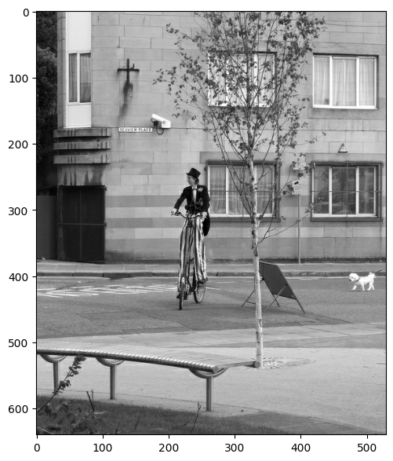

Creating TFRecords
Author: Dimitre Oliveira
Date created: 2021/02/27
Last modified: 2023/12/20
Description: Converting data to the TFRecord format.

Introduction
The TFRecord format is a simple format for storing a sequence of binary records. Converting your data into TFRecord has many advantages, such as:
- More efficient storage: the TFRecord data can take up less space than the original data; it can also be partitioned into multiple files.
- Fast I/O: the TFRecord format can be read with parallel I/O operations, which is useful for TPUs or multiple hosts.
- Self-contained files: the TFRecord data can be read from a single source—for example, the COCO2017 dataset originally stores data in two folders ("images" and "annotations").
An important use case of the TFRecord data format is training on TPUs. First, TPUs are fast enough to benefit from optimized I/O operations. In addition, TPUs require data to be stored remotely (e.g. on Google Cloud Storage) and using the TFRecord format makes it easier to load the data without batch-downloading.
Performance using the TFRecord format can be further improved if you also use it with the tf.data API.
In this example you will learn how to convert data of different types (image, text, and numeric) into TFRecord.
Reference
Dependencies
import os
os.environ["KERAS_BACKEND"] = "tensorflow"
import keras
import json
import pprint
import tensorflow as tf
import matplotlib.pyplot as plt
Download the COCO2017 dataset
We will be using the COCO2017 dataset, because it has many different types of features, including images, floating point data, and lists. It will serve as a good example of how to encode different features into the TFRecord format.
This dataset has two sets of fields: images and annotation meta-data.
The images are a collection of JPG files and the meta-data are stored in a JSON file which, according to the official site, contains the following properties:
id: int,
image_id: int,
category_id: int,
segmentation: RLE or [polygon], object segmentation mask
bbox: [x,y,width,height], object bounding box coordinates
area: float, area of the bounding box
iscrowd: 0 or 1, is single object or a collection
root_dir = "datasets"
tfrecords_dir = "tfrecords"
images_dir = os.path.join(root_dir, "val2017")
annotations_dir = os.path.join(root_dir, "annotations")
annotation_file = os.path.join(annotations_dir, "instances_val2017.json")
images_url = "http://images.cocodataset.org/zips/val2017.zip"
annotations_url = (
"http://images.cocodataset.org/annotations/annotations_trainval2017.zip"
)
# Download image files
if not os.path.exists(images_dir):
image_zip = keras.utils.get_file(
"images.zip",
cache_dir=os.path.abspath("."),
origin=images_url,
extract=True,
)
os.remove(image_zip)
# Download caption annotation files
if not os.path.exists(annotations_dir):
annotation_zip = keras.utils.get_file(
"captions.zip",
cache_dir=os.path.abspath("."),
origin=annotations_url,
extract=True,
)
os.remove(annotation_zip)
print("The COCO dataset has been downloaded and extracted successfully.")
with open(annotation_file, "r") as f:
annotations = json.load(f)["annotations"]
print(f"Number of images: {len(annotations)}")
Downloading data from http://images.cocodataset.org/zips/val2017.zip
815585330/815585330 ━━━━━━━━━━━━━━━━━━━━ 79s 0us/step
Downloading data from http://images.cocodataset.org/annotations/annotations_trainval2017.zip
252907541/252907541 ━━━━━━━━━━━━━━━━━━━━ 5s 0us/step
The COCO dataset has been downloaded and extracted successfully.
Number of images: 36781
Contents of the COCO2017 dataset
pprint.pprint(annotations[60])
{'area': 367.89710000000014,
'bbox': [265.67, 222.31, 26.48, 14.71],
'category_id': 72,
'id': 34096,
'image_id': 525083,
'iscrowd': 0,
'segmentation': [[267.51,
222.31,
292.15,
222.31,
291.05,
237.02,
265.67,
237.02]]}
Parameters
num_samples is the number of data samples on each TFRecord file.
num_tfrecords is total number of TFRecords that we will create.
num_samples = 4096
num_tfrecords = len(annotations) // num_samples
if len(annotations) % num_samples:
num_tfrecords += 1 # add one record if there are any remaining samples
if not os.path.exists(tfrecords_dir):
os.makedirs(tfrecords_dir) # creating TFRecords output folder
Define TFRecords helper functions
def image_feature(value):
"""Returns a bytes_list from a string / byte."""
return tf.train.Feature(
bytes_list=tf.train.BytesList(value=[tf.io.encode_jpeg(value).numpy()])
)
def bytes_feature(value):
"""Returns a bytes_list from a string / byte."""
return tf.train.Feature(bytes_list=tf.train.BytesList(value=[value.encode()]))
def float_feature(value):
"""Returns a float_list from a float / double."""
return tf.train.Feature(float_list=tf.train.FloatList(value=[value]))
def int64_feature(value):
"""Returns an int64_list from a bool / enum / int / uint."""
return tf.train.Feature(int64_list=tf.train.Int64List(value=[value]))
def float_feature_list(value):
"""Returns a list of float_list from a float / double."""
return tf.train.Feature(float_list=tf.train.FloatList(value=value))
def create_example(image, path, example):
feature = {
"image": image_feature(image),
"path": bytes_feature(path),
"area": float_feature(example["area"]),
"bbox": float_feature_list(example["bbox"]),
"category_id": int64_feature(example["category_id"]),
"id": int64_feature(example["id"]),
"image_id": int64_feature(example["image_id"]),
}
return tf.train.Example(features=tf.train.Features(feature=feature))
def parse_tfrecord_fn(example):
feature_description = {
"image": tf.io.FixedLenFeature([], tf.string),
"path": tf.io.FixedLenFeature([], tf.string),
"area": tf.io.FixedLenFeature([], tf.float32),
"bbox": tf.io.VarLenFeature(tf.float32),
"category_id": tf.io.FixedLenFeature([], tf.int64),
"id": tf.io.FixedLenFeature([], tf.int64),
"image_id": tf.io.FixedLenFeature([], tf.int64),
}
example = tf.io.parse_single_example(example, feature_description)
example["image"] = tf.io.decode_jpeg(example["image"], channels=3)
example["bbox"] = tf.sparse.to_dense(example["bbox"])
return example
Generate data in the TFRecord format
Let's generate the COCO2017 data in the TFRecord format. The format will be
file_{number}.tfrec (this is optional, but including the number sequences in the file
names can make counting easier).
for tfrec_num in range(num_tfrecords):
samples = annotations[(tfrec_num * num_samples) : ((tfrec_num + 1) * num_samples)]
with tf.io.TFRecordWriter(
tfrecords_dir + "/file_%.2i-%i.tfrec" % (tfrec_num, len(samples))
) as writer:
for sample in samples:
image_path = f"{images_dir}/{sample['image_id']:012d}.jpg"
image = tf.io.decode_jpeg(tf.io.read_file(image_path))
example = create_example(image, image_path, sample)
writer.write(example.SerializeToString())
Explore one sample from the generated TFRecord
raw_dataset = tf.data.TFRecordDataset(f"{tfrecords_dir}/file_00-{num_samples}.tfrec")
parsed_dataset = raw_dataset.map(parse_tfrecord_fn)
for features in parsed_dataset.take(1):
for key in features.keys():
if key != "image":
print(f"{key}: {features[key]}")
print(f"Image shape: {features['image'].shape}")
plt.figure(figsize=(7, 7))
plt.imshow(features["image"].numpy())
plt.show()
bbox: [473.07 395.93 38.65 28.67]
area: 702.1057739257812
category_id: 18
id: 1768
image_id: 289343
path: b'datasets/val2017/000000289343.jpg'
Image shape: (640, 529, 3)

Train a simple model using the generated TFRecords
Another advantage of TFRecord is that you are able to add many features to it and later
use only a few of them, in this case, we are going to use only image and category_id.
Define dataset helper functions
def prepare_sample(features):
image = keras.ops.image.resize(features["image"], size=(224, 224))
return image, features["category_id"]
def get_dataset(filenames, batch_size):
dataset = (
tf.data.TFRecordDataset(filenames, num_parallel_reads=AUTOTUNE)
.map(parse_tfrecord_fn, num_parallel_calls=AUTOTUNE)
.map(prepare_sample, num_parallel_calls=AUTOTUNE)
.shuffle(batch_size * 10)
.batch(batch_size)
.prefetch(AUTOTUNE)
)
return dataset
train_filenames = tf.io.gfile.glob(f"{tfrecords_dir}/*.tfrec")
batch_size = 32
epochs = 1
steps_per_epoch = 50
AUTOTUNE = tf.data.AUTOTUNE
input_tensor = keras.layers.Input(shape=(224, 224, 3), name="image")
model = keras.applications.EfficientNetB0(
input_tensor=input_tensor, weights=None, classes=91
)
model.compile(
optimizer=keras.optimizers.Adam(),
loss=keras.losses.SparseCategoricalCrossentropy(),
metrics=[keras.metrics.SparseCategoricalAccuracy()],
)
model.fit(
x=get_dataset(train_filenames, batch_size),
epochs=epochs,
steps_per_epoch=steps_per_epoch,
verbose=1,
)
50/50 ━━━━━━━━━━━━━━━━━━━━ 146s 2s/step - loss: 3.9206 - sparse_categorical_accuracy: 0.1690
<keras.src.callbacks.history.History at 0x7f70684c27a0>
Conclusion
This example demonstrates that instead of reading images and annotations from different sources you can have your data coming from a single source thanks to TFRecord. This process can make storing and reading data simpler and more efficient. For more information, you can go to the TFRecord and tf.train.Example tutorial.